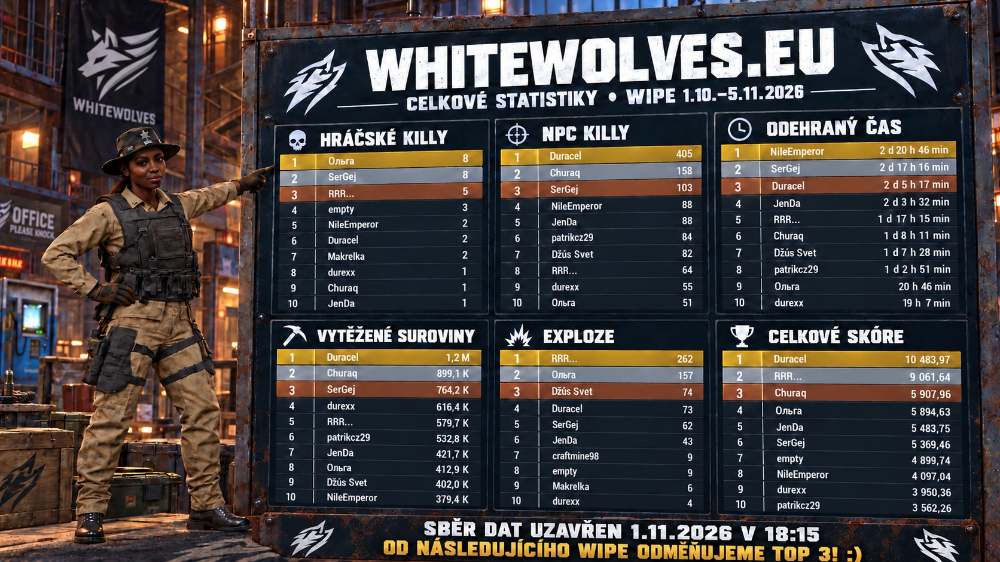

Postav si svůj svět.
Od první dřevěné chatrče po pořádný compound. Plánuj, stavěj a připrav se na všechno, co Rust přinese.
Každá základna má svůj příběh. Každý wipe nový začátek. Najdi svou smečku na WhiteWolves.eu.
Spusť Rust a připoj se přímo. S ostatními hráči se potkáš na našem Discordu.
Aktuální wipe, pravidla a oznámení najdeš na Discordu.
Ve hře stiskni F1 a vlož client.connect 185.180.2.12:27928.
Živý stav a počet hráčů zde zatím nejsou dostupné.
Od první dřevěné chatrče po pořádný compound. Plánuj, stavěj a připrav se na všechno, co Rust přinese.
Loot, monumenty a chvíle, kdy rozhoduje jediný výstřel. Nejlepší příběhy vznikají přímo ve hře.
Domluv společné hraní, najdi spoluhráče a sdílej svoje momenty. Komunita pokračuje i mimo mapu.
1.10.–5.11.2026
Sběr dat uzavřen . Výsledky zachycují stav k tomuto okamžiku, přestože wipe končí až 5.11.

10 483,97 bodu
405 zabitých NPC
Přibližně 1,2 milionu
2 dny, 20 hodin a 46 minut
Shodně 8 killů
262 explozí
Díky všem, kdo s námi hrajete a tvoříte komunitu WhiteWolves. Gratulujeme nejlepším — příští wipe může být tvoje jméno na špici!
Základny, krajina a vzpomínky zachycené na našem serveru. Kliknutím otevřeš celý screenshot.
Se spuštěným Steamem klikni na „Připojit se do hry“. Případně spusť Rust, otevři konzoli klávesou F1 a zadej client.connect 185.180.2.12:27928.
Aktuální informace sleduj na našem Discordu. Před hraním si přečti pravidla a oznámení komunity.
Připoj se na Discord WhiteWolves. Tam se můžeš domluvit s komunitou, zeptat se na server a najít parťáky na hraní.
Přidej se na Discord. Další wipe, další spoluhráč i další společný příběh můžou začít jednou zprávou.